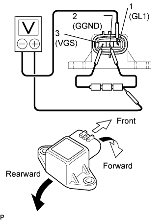
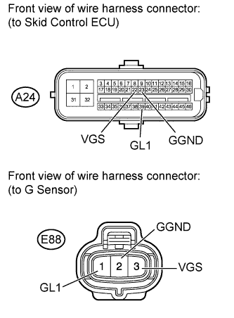

DTC C1243/43 Acceleration Sensor Stuck Malfunction |
DTC C1244/44 Open or Short in Deceleration Sensor Circuit |
DTC C1245/45 Acceleration Sensor Output Malfunction |
DTC C1381/97 Acceleration Sensor Power Supply Voltage Malfunction |
| DTC Code | DTC Detection Condition | Trouble Area |
| C1243/43 | The following condition repeats 16 times.
|
|
| C1244/44 | When either of the following conditions is detected: 1. Both of the following conditions continue for at least 60 seconds.
|
|
| C1245/45 | The following condition continues for at least 60 seconds.
|
|
| C1381/97 | A G sensor power source malfunction signal is received for at least 10 seconds at a speed of more than 3 km/h (2 mph). |
|

| 1.CHECK G SENSOR INSTALLATION |
Check that the G sensor is installed properly.
| Result | Proceed to | |
| The sensor is tightened to the specified torque. The sensor is not tilted. | A | |
| The sensor is not tightened to the specified torque. Or the sensor is tilted. | for Automatic Transmission | B |
| for Manual Transmission | C | |
|
| ||||
|
| ||||
| A | |
| 2.READ VALUE USING INTELLIGENT TESTER (DECELERATION SENSOR) |
Connect the intelligent tester to the DLC3.
Turn the engine switch on (IG) and turn the intelligent tester on.
Enter the following menus: Chassis / ABS/VSC/TRC / Data List.
| Tester Display | Measurement Item/Range | Normal Condition | Diagnostic Note |
| Deceleration Sensor | G sensor reading / min.: -18.52 m/s2, max.: 18.39 m/s2
| Approximately -1.28 to 1.27 m/s2 while stationary | The reading changes when the vehicle is bounced. |
Check the Data List for proper functioning of the G sensor.
|
| ||||
| OK | |
| 3.CHECK DTC |
Install the G sensor to the vehicle.
Clear the DTCs (Click here).
Drive the vehicle at 6 km/h (4 mph) or more.
Check if the same DTCs are output (Click here).
| Result | Proceed to | |
| DTC is not output | A | |
| DTC is output | LHD | B |
| RHD | C | |
|
| ||||
|
| ||||
| A | ||
| ||
| 4.INSPECT G SENSOR |
 |
Remove the G sensor (Click here).
Connect 3 dry cell batteries of 1.5 V in series.
Check the output voltage of terminal 1 (GL1) when the sensor is tilted forward and rearward.
| Tester Connection | Condition | Specified Condition |
| 1 (GL1) - Battery negative (-) lead | Horizontal | Approximately 2.5 V |
| 1 (GL1) - Battery negative (-) lead | Tilted forward | Approximately 0.5 to 2.5 V |
| 1 (GL1) - Battery negative (-) lead | Tilted rearward | Approximately 2.5 to 4.5 V |
|
| ||||
| OK | |
| 5.CHECK HARNESS AND CONNECTOR (SKID CONTROL ECU - G SENSOR) |
 |
Disconnect the A24 skid control ECU connector.
Disconnect the E88 G sensor connector.
Measure the resistance according to the value(s) in the table below.
| Tester Connection | Condition | Specified Condition |
| A24-39 (GL1) - E88-1 (GL1) | Always | Below 1 Ω |
| A24-23 (GGND) - E88-2 (GGND) | Always | Below 1 Ω |
| A24-22 (VGS) - E88-3 (VGS) | Always | Below 1 Ω |
| E88-1 (GL1) - Body ground | Always | 10 kΩ or higher |
| E88-2 (GGND) - Body ground | Always | 10 kΩ or higher |
| E88-3 (VGS) - Body ground | Always | 10 kΩ or higher |
|
| ||||
| OK | |
| 6.CHECK DTC |
Install the G sensor to the vehicle.
Clear the DTCs (Click here).
Drive the vehicle at 6 km/h (4 mph) or more.
Check if the same DTCs are output (Click here).
| Result | Proceed to | |
| DTC is not output | A | |
| DTC is output | LHD | B |
| RHD | C | |
|
| ||||
|
| ||||
| A | ||
| ||